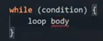
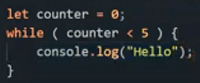
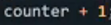
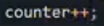
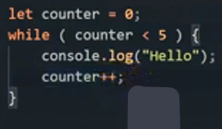
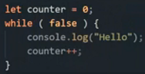

যেমন if ___ Else এর একটা syntax থাকে , ঠিক সেরকম while loop এরও একটা syntax থাকে ।
structure of while loop

এটা হল while loop এর syntax বা structure
এখানে condition এর জায়গায় condition দিতে হবে আর যে কাজটাকে বার বার করাতে চাইছি এই loop body এর মধ্যে সেটাকে দিতে হবে ।
loop এর body টা কতবার run করবে সেটা নির্ভর করে loop এর condition এর উপর ।
জেমন if এর condition জেমন true আর false এর উপর নির্ভর করে loop এর ক্ষেত্রেও তাই ।
loop এর condition টা যতক্ষন true থাকবে তার body টা ততক্ষণ run করতে থাকবে ।
এবং যেই মুহূর্তে loop এর condition টা false হয়ে যাবে তখন আর loop এর body ,, run করব না ।
তাই সবসময় loop এর condition টা অনেক বুঝে শুনে দেয়া উচিত তা,না হলে while loop টা তো বন্ধই হবে না loop এর body run হতেই থাকবে এবং সেটা অনাকাংখিত infinite loop এ পড়ে যাবে ( infinite loop মানে যে loop টার শেষ নেই )।
while loop এর condition এ
ভেরিএভল , comparison operator , logocal operator ইত্যাদি ব্যেবহার করা যায় ।
তারপর loop তার condition কে boolean এ convert করে তারপর true পেলে body ,, run করে । false পেলে বাইরে বেরিয়ে আসবে ।

একটা ভেরিএভল নিলাম
Let counter = 0 ;
variable নেয়া মানে initialistion এর কাজ শেষ ।
তারপর while এর condition টা লিখলাম ।
এখানে condition টা true কারন
counter ,, less than ,<, 5 মানে true
তাই while তার body ,, run করবে ।
body ,, run করার পর js while এর বাইরে বেরিয়ে আসবে না কারন সে তার body কে ততক্ষণ run করবে যতক্ষণ সে তার condition কে true পাবে ।
এবং এখানে js যতবার সে while এর condition এর কাছে যাবে সে ততবারই true পাবে কারন পরের বারে আবার যখন while এর condition এর কাছে যাবে সে দেখবে counter এ সেই 0 ই স্টোর করা আছে তাই js আবার ও true পাবে ।
তাই এটা একটা infinite loop হয়ে যাবে ।
এখানে এই infinite loop টাকে নির্দিষ্ট loop এ পরিনত করার জন্য loop body এর ভেতরে চাহিলে এটা যোগ করতে পারি যেমন  বা  ভেরিএবল এর সাথে increment ব্যেবহার করার কারনে
এই লাইনটা js এ যতবার যোগ হবে ততবার 1 এক করে যোগ হবে ভেরিএবলের সাথে । আর এই লাইনটাকে বলা হয় stepping ।
মুল statement টা হবে এরকম ।

এখানে js , while এর condition এ ঢুকবে তারপর সে পাবে
counter < 5 = true তাই সে loop body ,, run করবে ।
loop body এর পরবর্তী লাইনে যাওয়ার পর js ,, counter++ কে execute করার পর counter এর সাথে 1 যোগ হয়ে counter এর ভেতর store হবে 1 ।
এখন যেহেতু 1 < 5 সেহেতু আগের মত আবার js ,, true পেয়ে body ,, run করবে । এবং js যখন আবার counter++ ,, execute করবে তখন সে আবার while এর condition এ 1 যোগ করবে তাই এই মুহূর্তে while এর condition এ store আছে 2 ।
যেহেতু 2 < 5 সেহেতু js ,, true পেয়ে সে আবার
body , run করবে ।
এভাবে চলতেই থাকবে যতক্ষণ while এর condition ভেরিএবলে 5 স্টোর
হয়ে 5 < 5 condition টা false হয় ।
আগের বার counter টা প্রতিবারই 0 থেকে যাচ্ছিল যার কারনে প্রতিবার true আসছিল ।
কিন্তু যখন loop এর body তে এই stepping exprission টা যোগ করেছি তখন থেকে প্রতি iteration (loop একবার ঘুরা কে একটা iteration বলে) এ counter এর value 1 করে বাড়তে থাকবে ।
এবং এভাবে এক এক করে বাড়তে বাড়তে যখন counter এর value টা 5 হয়ে যাবে তখনি loop এর condition ,, false হয়ে যাবে এবং loop টা stop হয়ে যাবে । এবং js ,, loop টা থেকে বের হয়ে যাবে ।
যেমন counter = 5 হলে while loop টা এই অবস্থায় যাবে ।
ex:-

এখানে ,, 5 < 5 ,, mean false ।
যেমন কখন একটা
< select >
< option> 2000 - 2005 < option>
< select >
এই রকম একটা markUP বানাতে হতে পারে এবং সেটার মধ্যে দিতে হবে
50+ select এর option আর এটার জন্য option এর 50+ লাইন কপি লাগবে না ।
সে কাজটা অনেক সহজে ও সর্টে while loop এর সাহায্যে করা যায় ।
মানে যখনি এরকম কোন setution আসবে যে একই কাজ বার বার করতে হবে তখনি এই loop এর ব্যেবহার করা হয় ।
viwe the js with a text editor .there some more
এমন ভাবে loop এর condition টা দিতে হবে যেন সেটা একটা পর্যায় গিয়ে false হয় ।